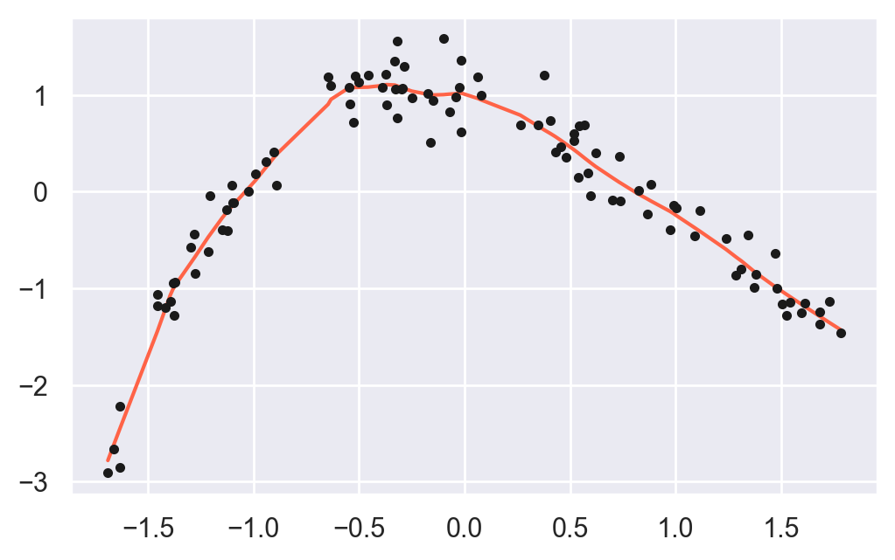
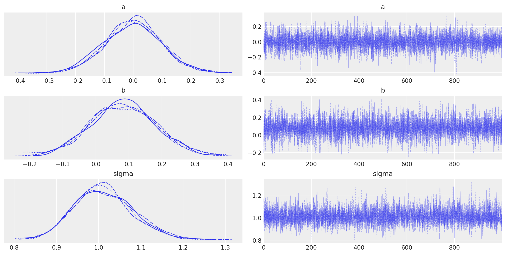
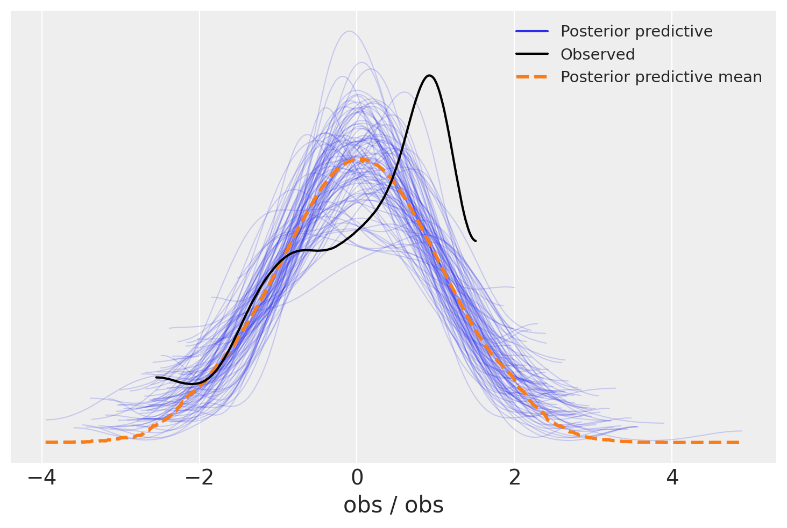
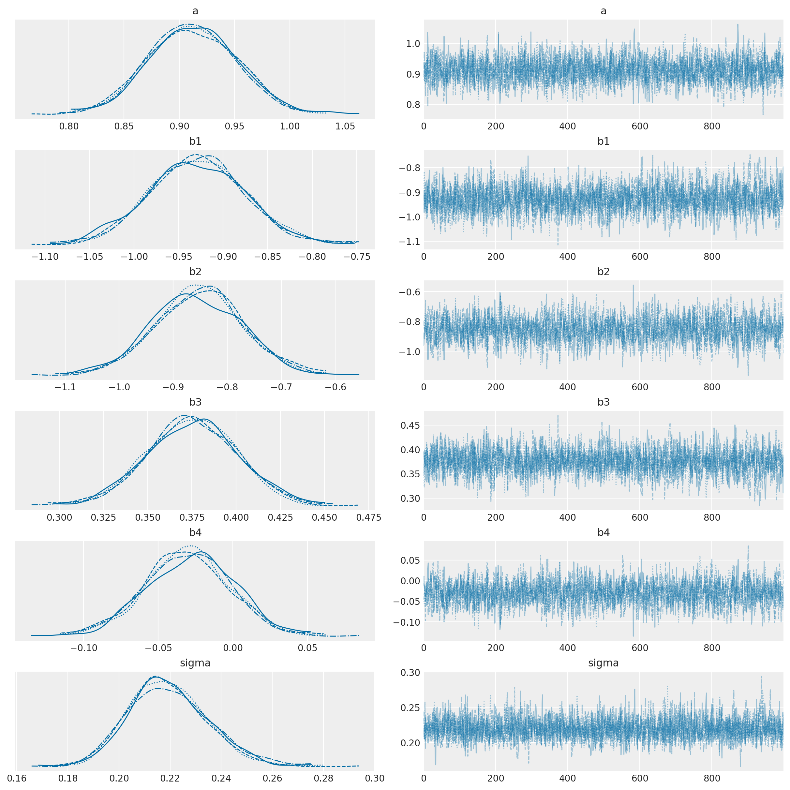
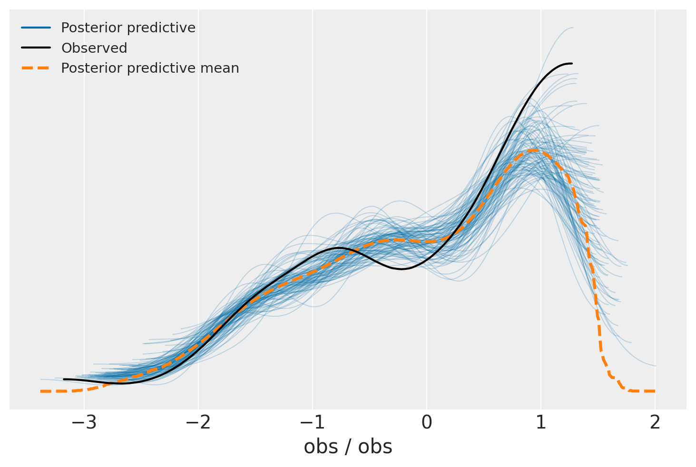
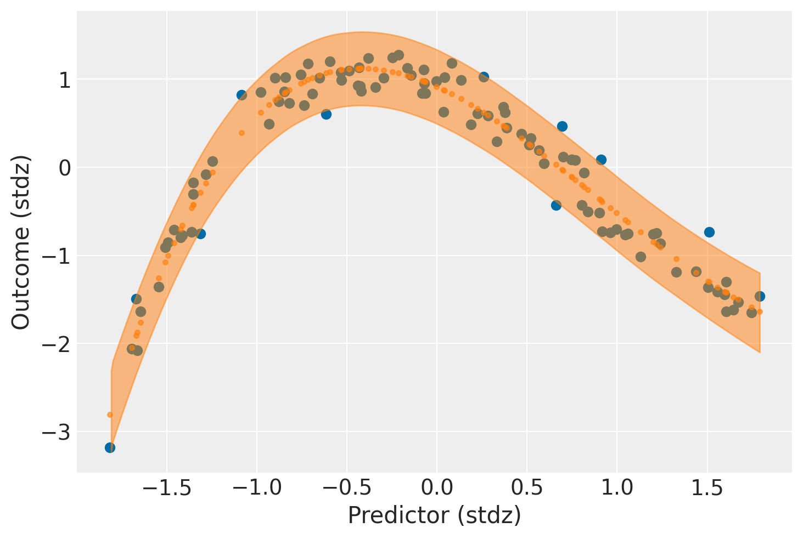
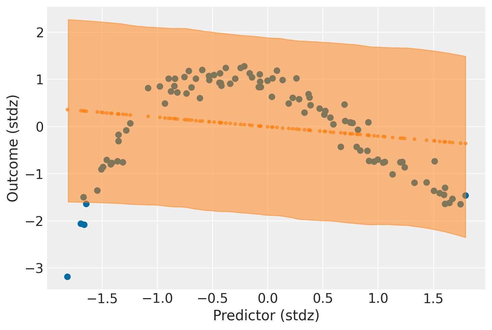

45. Posterior Predictive Checks#
I controlli predittivi a posteriori (PPC) forniscno un ottimo metodo per convalidare un modello. L’idea è quella di generare dei dati dal modello utilizzando i parametri della distribuzione a posteriori. Questo argomento è stato trattato nel capitolo La predizione bayesiana. Ricordiamo che i PPC si pongono il problema di quantificare il grado in cui i dati generati dal modello si discostano dalla vera distribuzione \(Y\). Quindi, la domanda è quella di capire se la distribuzione a posteriori che è stata ottenuta è simile alla distribuzione teorica. In questo capitolo vedremo come usare degli strumenti grafici per affrontare questo problema.
45.1. Simulazione#
Iniziamo a simulare dei dati.
import arviz as az
import matplotlib.pyplot as plt
import seaborn as sns
import numpy as np
import pymc as pm
from pymc import HalfNormal, Model, Normal, sample
import xarray as xr
from statsmodels.nonparametric.smoothers_lowess import lowess as sm_lowess
from scipy.constants import golden
import warnings
warnings.filterwarnings('ignore')
warnings.simplefilter('ignore')
print(f"Runing on PyMC v{pm.__version__}")
---------------------------------------------------------------------------
ModuleNotFoundError Traceback (most recent call last)
Cell In[1], line 8
6 from pymc import HalfNormal, Model, Normal, sample
7 import xarray as xr
----> 8 from statsmodels.nonparametric.smoothers_lowess import lowess as sm_lowess
9 from scipy.constants import golden
10 import warnings
ModuleNotFoundError: No module named 'statsmodels'
%matplotlib inline
plt.rc('figure', figsize=(5.0, 5.0/golden))
sns.set_theme()
sns.set_palette("colorblind")
SEED = 12345
rng = np.random.default_rng(SEED)
def standardize(series):
"""Standardize a pandas series"""
return (series - series.mean()) / series.std()
I dati verranno simulati in modo tale da avere una relazione non lineare tra \(X\) e \(Y\).
# Size of dataset
size = 100
x = 2*np.random.random(size)
y = np.sin(x) * 12*np.exp(-x) + np.random.normal(0, 0.2, size)
zx = standardize(x)
zy = standardize(y)
sm_x, sm_y = sm_lowess(zy, zx, frac=1./5., it=5, return_sorted=True).T
plt.plot(sm_x, sm_y, color='tomato')
plt.plot(zx, zy, 'k.')
[<matplotlib.lines.Line2D at 0x7fd9957f5e40>]

È ovvio che, in un caso come questo, un modello lineare come quello che abbiamo esaminato in precedenza, non è adeguato. Ma adattiamo comunque un modello lineare ai dati proprio per verificare se i PPC saranno in grado di mettere in luce il fatto che il modello è sbagliato. Implemento qui lo stesso modello che abbiamo usato in precedenza. I dati sono standardizzati, per cui le seguenti distribuzioni a priori per i parametri sono adeguate.
with pm.Model() as model_0:
a = pm.Normal("a", 0.0, 2.0)
b = pm.Normal("b", 0.0, 2.0)
mu = a + b * zx
sigma = pm.Normal("sigma", sigma=1.0)
pm.Normal("obs", mu=mu, sigma=sigma, observed=zy)
idata_0 = pm.sample()
Auto-assigning NUTS sampler...
Initializing NUTS using jitter+adapt_diag...
Multiprocess sampling (4 chains in 4 jobs)
NUTS: [a, b, sigma]
Sampling 4 chains for 1_000 tune and 1_000 draw iterations (4_000 + 4_000 draws total) took 21 seconds.
Anche se il modello è sbagliato, i trace plot non mettono in evidenza alcuna anomalia di rilievo.
_ = az.plot_trace(idata_0)

Generiamo ora i dati necessari per i controlli predittivi a posteriori. A tal fine, useremo una funzione PyMC dedicata a questo scopo per campionare i dati dalla distribuzione a posteriori. Questa funzione estrarrà casualmente 4000 campioni di parametri dalla traccia. Quindi, per ogni campione, estrarrà 100 numeri casuali da una distribuzione normale specificata dai valori di mu e sigma in quel campione (si veda il capitolo La predizione bayesiana.):
with model_0:
pm.sample_posterior_predictive(
idata_0, extend_inferencedata=True, random_seed=rng);
Sampling: [obs]
Ora, l’oggetto posterior_predictive in idata_0 contiene 4000 set di dati simulati, contenenti 100 campioni ciascuno, ognuno dei quali è stato calcolato usando un valore del parametro preso a caso dalla distribuzione a posteriori:
idata_0
-
<xarray.Dataset> Dimensions: (chain: 4, draw: 1000) Coordinates: * chain (chain) int64 0 1 2 3 * draw (draw) int64 0 1 2 3 4 5 6 7 8 ... 992 993 994 995 996 997 998 999 Data variables: a (chain, draw) float64 -0.0008338 0.001534 ... 0.06971 -0.02241 b (chain, draw) float64 -0.1373 -0.2687 -0.2911 ... -0.2093 -0.06443 sigma (chain, draw) float64 0.9952 0.9752 0.9103 ... 1.013 1.013 0.917 Attributes: created_at: 2023-01-05T13:14:35.862017 arviz_version: 0.14.0 inference_library: pymc inference_library_version: 5.0.0 sampling_time: 19.642791032791138 tuning_steps: 1000 -
<xarray.Dataset> Dimensions: (chain: 4, draw: 1000, obs_dim_2: 100) Coordinates: * chain (chain) int64 0 1 2 3 * draw (draw) int64 0 1 2 3 4 5 6 7 ... 992 993 994 995 996 997 998 999 * obs_dim_2 (obs_dim_2) int64 0 1 2 3 4 5 6 7 8 ... 92 93 94 95 96 97 98 99 Data variables: obs (chain, draw, obs_dim_2) float64 0.972 0.7707 ... -0.06466 2.31 Attributes: created_at: 2023-01-05T13:14:46.788425 arviz_version: 0.14.0 inference_library: pymc inference_library_version: 5.0.0 -
<xarray.Dataset> Dimensions: (chain: 4, draw: 1000) Coordinates: * chain (chain) int64 0 1 2 3 * draw (draw) int64 0 1 2 3 4 5 ... 994 995 996 997 998 999 Data variables: (12/17) step_size_bar (chain, draw) float64 1.078 1.078 ... 1.056 1.056 step_size (chain, draw) float64 1.335 1.335 ... 1.076 1.076 perf_counter_start (chain, draw) float64 7.303e+03 ... 7.304e+03 index_in_trajectory (chain, draw) int64 0 -3 1 -3 3 0 ... 3 0 -2 1 0 -1 n_steps (chain, draw) float64 3.0 3.0 3.0 3.0 ... 3.0 1.0 3.0 acceptance_rate (chain, draw) float64 0.4757 0.9958 ... 0.929 0.7054 ... ... reached_max_treedepth (chain, draw) bool False False False ... False False energy_error (chain, draw) float64 0.0 0.01263 ... 0.0 0.2731 lp (chain, draw) float64 -144.4 -144.5 ... -144.6 -145.8 process_time_diff (chain, draw) float64 0.000522 0.000524 ... 0.000539 tree_depth (chain, draw) int64 2 2 2 2 2 2 1 2 ... 2 2 2 2 2 1 2 diverging (chain, draw) bool False False False ... False False Attributes: created_at: 2023-01-05T13:14:35.875325 arviz_version: 0.14.0 inference_library: pymc inference_library_version: 5.0.0 sampling_time: 19.642791032791138 tuning_steps: 1000 -
<xarray.Dataset> Dimensions: (obs_dim_0: 100) Coordinates: * obs_dim_0 (obs_dim_0) int64 0 1 2 3 4 5 6 7 8 ... 92 93 94 95 96 97 98 99 Data variables: obs (obs_dim_0) float64 -2.058 0.8381 1.13 ... 1.243 0.06697 -0.9083 Attributes: created_at: 2023-01-05T13:14:35.882189 arviz_version: 0.14.0 inference_library: pymc inference_library_version: 5.0.0
A questo punto possiamo utilizzare la funzione az.plot_ppc() per determinare se il modello è almeno in grado di riprodurre i dati osservati:
_ = az.plot_ppc(idata_0, num_pp_samples=100)

Il PPC plot mostra come vi sia pochissima corrispondenza tra la distribuzione dei dati osservati (in nero) e la distribuzione dei dati predetti dal modello. Questo era atteso, dato che abbiamo adattato un modello del tutto sbagliato per i dati a disposizione.
Proseguiamo con la simulazione. I dati sono stati generati con una funzione non lineare. In generale, quella funzione è sconosciuta. Qualunque funzione non lineare, però, può essere approssimata da un modello polinomiale. Un modello di regressione polinomiale si ottiene inserendo nel modello dei nuovi predittori, ciascuno ottenuto elevando la variabile originale a una potenza:
Questo modello, anche se non descrive una relazione lineare tra \(X\) e \(Y\), è funzione lineare dei coefficienti ignoti \(\alpha, \beta_1, \beta_2, \dots\). Il grado del polinomio dipende dal tipo di curva che vogliamo approssimare. Proviamo qui con un modello polinomiale di ordine 4.
zx2 = zx**2
zx3 = zx**3
zx4 = zx**4
with pm.Model() as model_1:
a = pm.Normal("a", 0.0, 1.0)
b1 = pm.Normal("b1", 0.0, 1.0)
b2 = pm.Normal("b2", 0.0, 1.0)
b3 = pm.Normal("b3", 0.0, 1.0)
b4 = pm.Normal("b4", 0.0, 1.0)
mu = a + b1 * zx + b2 * zx2 + b3 * zx3 + b4 * zx4
sigma = pm.HalfNormal("sigma", sigma=2.0)
pm.Normal("obs", mu=mu, sigma=sigma, observed=zy)
idata_1 = pm.sample()
Auto-assigning NUTS sampler...
Initializing NUTS using jitter+adapt_diag...
Multiprocess sampling (4 chains in 4 jobs)
NUTS: [a, b1, b2, b3, b4, sigma]
Sampling 4 chains for 1_000 tune and 1_000 draw iterations (4_000 + 4_000 draws total) took 29 seconds.
_ = az.plot_trace(idata_1)
array([[<AxesSubplot: title={'center': 'a'}>,
<AxesSubplot: title={'center': 'a'}>],
[<AxesSubplot: title={'center': 'b1'}>,
<AxesSubplot: title={'center': 'b1'}>],
[<AxesSubplot: title={'center': 'b2'}>,
<AxesSubplot: title={'center': 'b2'}>],
[<AxesSubplot: title={'center': 'b3'}>,
<AxesSubplot: title={'center': 'b3'}>],
[<AxesSubplot: title={'center': 'b4'}>,
<AxesSubplot: title={'center': 'b4'}>],
[<AxesSubplot: title={'center': 'sigma'}>,
<AxesSubplot: title={'center': 'sigma'}>]], dtype=object)

az.summary(idata_1)
| mean | sd | hdi_3% | hdi_97% | mcse_mean | mcse_sd | ess_bulk | ess_tail | r_hat | |
|---|---|---|---|---|---|---|---|---|---|
| a | 0.912 | 0.039 | 0.840 | 0.986 | 0.001 | 0.001 | 2100.0 | 2466.0 | 1.0 |
| b1 | -0.929 | 0.054 | -1.037 | -0.835 | 0.001 | 0.001 | 2110.0 | 1792.0 | 1.0 |
| b2 | -0.853 | 0.082 | -1.015 | -0.705 | 0.002 | 0.001 | 1764.0 | 2157.0 | 1.0 |
| b3 | 0.375 | 0.025 | 0.328 | 0.423 | 0.001 | 0.000 | 2088.0 | 1735.0 | 1.0 |
| b4 | -0.030 | 0.029 | -0.084 | 0.023 | 0.001 | 0.000 | 1859.0 | 2459.0 | 1.0 |
| sigma | 0.219 | 0.015 | 0.191 | 0.248 | 0.000 | 0.000 | 3024.0 | 2367.0 | 1.0 |
Anche in questo caso, campioniamo dalla distribuzione a posteriori dei parametri e simuliamo i dati possibili futuri. L’esame del PPC plot, in questo secondo caso, mostra una buona corrispondenza tra le predizioni del modello e i dati osservati.
with model_1:
pm.sample_posterior_predictive(
idata_1, extend_inferencedata=True, random_seed=rng)
_ = az.plot_ppc(idata_1, num_pp_samples=100)
Sampling: [obs]
<AxesSubplot: xlabel='obs / obs'>

Poniamoci ora il problema di generare un grafico che mostra la relazione prevista tra il predittore (\(x\)) e i valori della \(y\) previsti dal modello.
with model_1:
pm.sample_posterior_predictive(
idata_1, extend_inferencedata=True, random_seed=rng)
post = idata_1.posterior
mu_pp = post["a"] + post["b1"] * xr.DataArray(zx, dims=["obs_id"]) + \
post["b2"] * xr.DataArray(zx2, dims=["obs_id"]) + \
post["b3"] * xr.DataArray(zx3, dims=["obs_id"]) + \
post["b4"] * xr.DataArray(zx4, dims=["obs_id"])
_, ax = plt.subplots()
ax.plot(
zx, mu_pp.mean(("chain", "draw")), '.', label="Mean outcome", color="C1", alpha=0.6
)
ax.scatter(zx, idata_1.observed_data["obs"])
az.plot_hdi(zx, idata_1.posterior_predictive["obs"])
ax.set_xlabel("Predictor (stdz)")
ax.set_ylabel("Outcome (stdz)")
Sampling: [obs]
Text(0, 0.5, 'Outcome (stdz)')

per questo secondo modello vediamo come i dati predetti (la banda evidenziata) approssimano da vicino la relazione tra i dati osservati e la \(x\).
Ripetiamo questo procedimento usando i dati del modello sbagliato.
with model_0:
pm.sample_posterior_predictive(
idata_0, extend_inferencedata=True, random_seed=rng)
post = idata_0.posterior
mu_pp = post["a"] + post["b"] * xr.DataArray(zx, dims=["obs_id"])
_, ax = plt.subplots()
ax.plot(
zx, mu_pp.mean(("chain", "draw")), '.', label="Mean outcome", color="C1", alpha=0.6
)
ax.scatter(zx, idata_0.observed_data["obs"])
az.plot_hdi(zx, idata_0.posterior_predictive["obs"])
ax.set_xlabel("Predictor (stdz)")
ax.set_ylabel("Outcome (stdz)");
Sampling: [obs]
Text(0, 0.5, 'Outcome (stdz)')

Si noti come, in questo caso, vi è un’enorme incertezza nella predizone del modello. E, ovviamente, i dati predetti non rendono conto, in nessun modo, della relazione tra i valori osservati \(x, y\).
In conlusione, dunque, i PPC plot sono un’utile strumento per il confronto tra modelli.
45.2. Watermark#
%load_ext watermark
%watermark -n -u -v -iv -w